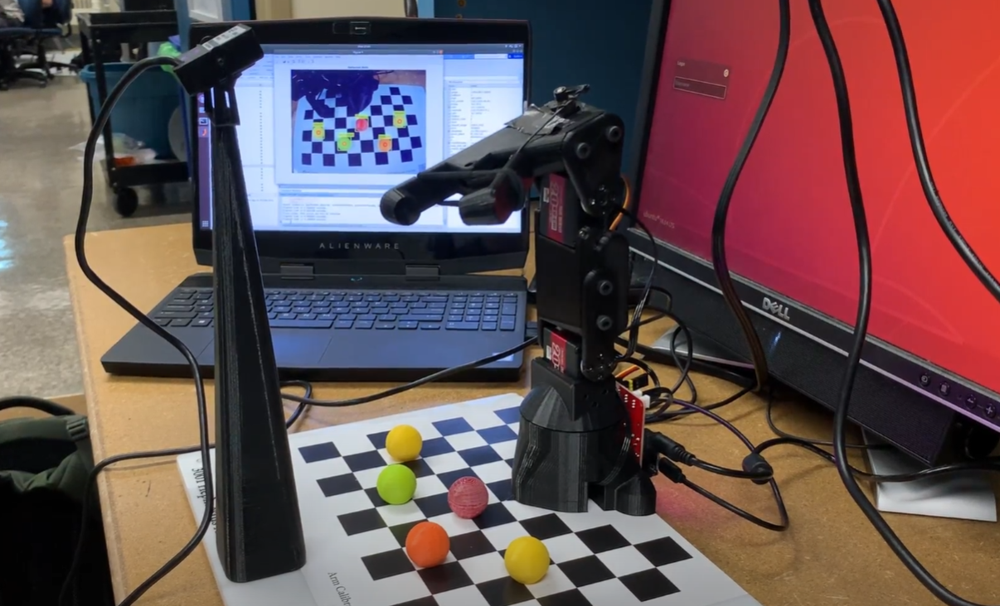

Video Demo of Project
This provides a more in depth explanation of what was done to accomplish the task.
View VideoSort colored balls using a 3 DoF 3D-printed arm

In this project, through the addition of computer vision, we created the functionality for the 3D printed Hephaestus arm to pick and sort colored balls on a checkerboard. Topics researched before initiating the project were camera calibration and image masking. For both of these tasks, much of it was simplified through MATLAB’s computer vision toolbox. However, it was important to understand how these concepts functioned as both selecting the image masking and part of extrinsic camera calibration was manually completed. Once recognition of color and ball locations were completed, making the arm pick up and drop off the balls at their corresponding required knowledge of inverse and forward kinematics for the 3 DoF arm.
This provides a more in depth explanation of what was done to accomplish the task.
View VideoAs part of our submission, we provided a report on our project. The report can be viewed here.
See Full PaperDesign in part by HTML5 UP